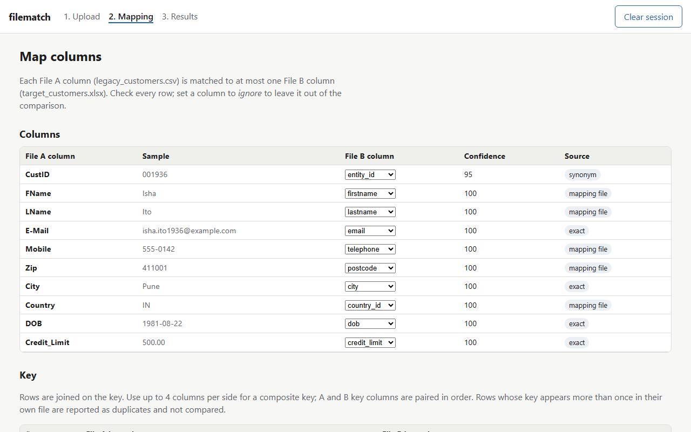
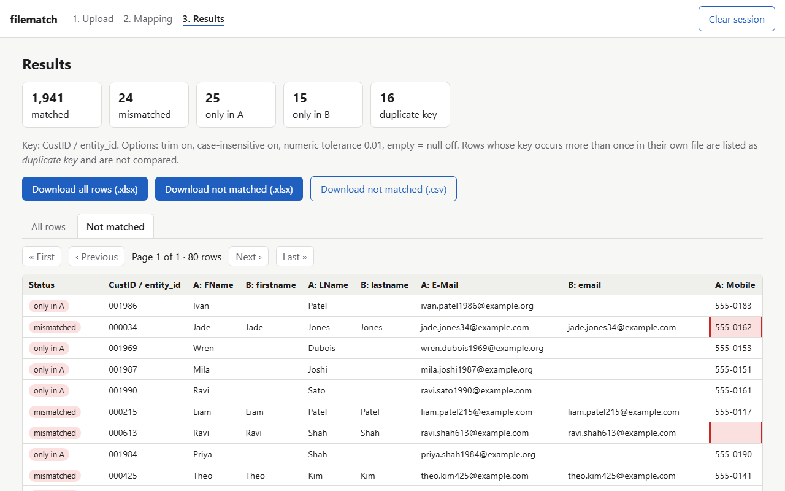

filematch
Local-first tool to compare legacy vs target Excel/CSV files for data-migration QA: column mapping, key-based diff, Excel report with mismatches highlighted.
What it does
Map columns
Auto-matches legacy headers to target headers (exact, synonyms, fuzzy), one to one, with a confidence score. You review and edit every row.
Diff on a key
Joins on 1–4 key columns and classes every row: matched, mismatched, only in A, only in B, or duplicate key.
Report in Excel
Download both views as .xlsx with mismatched cells in red, plus a CSV of every row that did not match.
Stays on your machine
Runs on 127.0.0.1. Files sit in a temp folder that is deleted when the session ends. No accounts, no telemetry.
Quick start
git clone https://github.com/jigar48/filematch.git
cd filematch
pip install .
filematchThen open http://127.0.0.1:8765/. Python 3.11 or newer.
Screenshots


Support my work
If this tool saved you time, buy me a coffee.